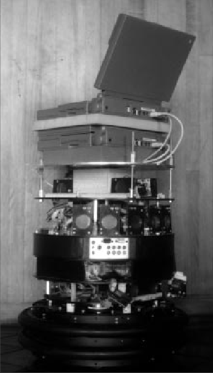
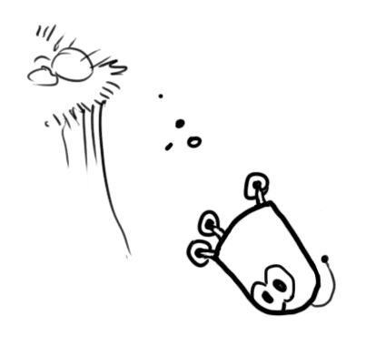

As previously stated, multiple hypothesis position representation is advantageous as an
AMRAutonomous Mobile RoboticsAutonomous Mobile Robotics can
Probabilistic techniques differ from this method as they
In the following sections we present two (
- Markov localisation
-
an explicitly specified probability distribution across all possible robots positions.
- Kalman filter localisation
-
a Gaussian probability density representation of robot position and scan matching for localisation.
Consider a AMRAutonomous Mobile RoboticsAutonomous Mobile Robotics moving in a known environment. As it starts to move, say from a precisely known location, it can keep track of its motion using odometry. Due to odometry uncertainty, after some movement the robot will become very uncertain about its position. (...) We have derived its mathematical properties in subsection 1.1.4. To keep position uncertainty from growing unbounded, the robot needs localise itself in relation to its environment map. To localise, the robot might use its on-board sensors (...) such as ultrasonic, range sensor, vision. to make observations of its environment. The information provided by the robot’s odometry, plus the information provided by such exteroceptive observations can be combined to enable the robot to localise as well as possible with respect to its map. The processes of updating based on proprioceptive sensor values and exteroceptive sensor values are often separated logically, leading to a general two-step process for robot position update. Action update represents the application of some action model () to the AMRAutonomous Mobile RoboticsAutonomous Mobile Robotics’s proprioceptive encoder measurements and prior belief state to provide a new belief state representing the robot’s belief about its current position.
We will assume that the robot’s proprioceptive encoder measurements are used as the best possible measure of its actions over time.
We ignore such cases and therefore have a simple formula:
| (1.4) |
Perception update represents the application of some perception model See to the AMRAutonomous Mobile RoboticsAutonomous Mobile Robotics’s exteroceptive sensor inputs i and updated belief state s’ to yield a refined belief tt state representing the robot’s current position:
| (1.5) |
The perception model () and sometimes the action model () are abstract functions of both the map and the robot’s physical configuration. (...) such as sensors and their positions, kinematics, etc.
In general, the action update process
In contrast,
perception update generally
This fundamental difference in the representation of belief state leads to the following advantages and
disadvantages of the two (
-
Markov localization allows for localization starting from any unknown position and can thus recover from ambiguous situations because the robot can track multiple, completely disparate possible positions. However, to update the probability of all positions within the whole state space at any time requires a discrete representation of the space (grid). The required memory and computational power can thus limit precision and map size.
-
Kalman filter localization tracks the robot from an initially known position and is inherently both precise and efficient. In particular, Kalman filter localization can be used in continuous world representations. However, if the uncertainty of the robot becomes too large (e.g. due to a robot collision with an object) and thus not truly un- imodal, the Kalman filter can fail to capture the multitude of possible robot positions and can become irrevocably lost.
Improvements are achieved or proposed by either only updating the state space of interest within the Markov approach [†]Borenstein, J & Koren, Y. Fast obstacle avoidance for mobile robots. IEEE Trans Rob Autom. v7, 278–287 or by combining both methods to create a hybrid localization system [†]Brock, O. & Khatib, O. High-speed navigation using the global dynamic window approach in Proceedings 1999 ieee international conference on robotics and automation (Cat. No. 99CH36288C) 1 (1999), 341–346.
We will now look at them in great detail.
Markov localization tracks the robot’s belief state using an
In actual applications, the number of possible poses can range from several hundred positions to millions of positions.
Given such a generic conception of robot position, a powerful update mechanism is required that can
compute the belief state that results when new information (...)
e.g. encoder values and sensor values. is
incorporated into a prior belief state with arbitrary probability density. The solution is born out of
probability theory, and so the next section describes the foundations of probability theory related to
this problem, notably
Application of Probability for Localisation
Given a discrete representation of robot positions, for us to express a belief state we wish to assign to each possible robot position a probability the robot is indeed at that position.
From theory of probability, we use the term
to denote the probability that
is
For example we can use to denote the prior probability the robot is at position at time .
In practice, we would like to calculate the probability of each individual robot position
given the encoder and sensor evidence the robot has collected. For this, we use the term
to denote the
For example, we use to denote the probability that the robot is at position given that the robot’s sensor inputs .
The question we would like to answer is the following;
The answer lies in the product rule, which states:
| (1.6) |
The equation given in Eq. (1.6) is relatively straightforward, as the probability of
| (1.7) |
Using both Eq. (1.6) and Eq. (1.7) together, we can derive
| (1.8) |
We use
The belief state of the robot must assign a probability for each location in . The function described in Eq. (1.5) expresses a mapping from a belief state and sensor input to a refined belief state. To do this, we must update the probability associated with each position in , and we can do this by directly applying Bayes formula to every such .
In denoting this, we will stop representing the temporal index for simplicity and will further use to mean :
| (1.9) |
The value of is key to Eq. (1.9) , and this probability of a sensor input at each robot position must be computed using some model. An obvious strategy would be to consult the robot’s map, identifying the probability of particular sensor readings with each possible map position, given knowledge about the robot’s sensor geometry and the mapped environment. The value of is easy to recover in this case. It is simply the probability associated with the belief state before the perceptual update process.
Finally, note that the denominator does NOT depend upon ; that is, as we apply Eq. (1.9) to all positions in , the denominator never varies.
Because it is effectively constant, in practice this denominator is usually dropped and, at the end of the perception update step, all probabilities in the belief state are re-normalized to sum at 1.0.
Now consider the function of Eq. (1.4) . Act maps a former belief state and encoder measurement (...) i.e. robot action. to a new belief state. To compute the probability of position in the new belief state, one must integrate over all the possible ways in which the robot may have reached according to the potential positions expressed in the former belief state. This is subtle but fundamentally important. The same location l can be reached from multiple source locations with the same encoder measurement o because the encoder measurement is uncertain.
Temporal indices are required in this update equation:
| (1.10) |
Thus, the total probability for a specific position l is built up from the individual contribu- tions from every location l’ in the former belief state given encoder measurement o.
Eq. (1.9) and Eq. (1.10) form the basis of Markov localization, and they incorporate the Markov assumption. Formally, this means that their output is a function only of the robot’s previous state and its most recent actions (odometry) and perception. In a general, non- Markovian situation, the state of a system depends upon all of its history. After all, the value of a robot’s sensors at time t do not really depend only on its position at time t. They depend to some degree on the trajectory of the robot over time; indeed on the entire history of the robot.
By the same token, the position of the robot at time t does not really depend only on its position at time t-1 and its odometric measurements. Due to its history of motion, one wheel may have worn more than the other, causing a left-turning bias over time that affects its current position. So the Markov assumption is, of course, not a valid assumption. However the Markov as- sumption greatly simplifies tracking, reasoning and planning and so it is an approximation that continues to be extremely popular in mobile robotics.
Application: Markov Localisation using a Topological Map
A straightforward application of Markov localization is possible when the robot’s environment representation already provides an appropriate decomposition. This is the case when the environment representation is purely topological.
Consider a contest in which each robot is to receive a topological description of the environment. The
description would describe only the connectivity of hallways and rooms, with no mention of geometric
distance. In addition, this supplied map would be imperfect, containing several false arcs (e.g. a closed
door). Such was the case for the 1994 AAAI National Robot Contest, at which each robot’s mission was
to use the supplied map and its own sen- sors to navigate from a chosen starting position to a target
room.
Dervish 
Dervish, shown in Figure 5.20, includes a sonar arrangement custom-designed for the 1994 AAAI National Robot Contest. The environment in this contest consisted of a rectilinear indoor office space filled with real office furniture as obstacles. Traditional sonars are ar- ranged radially around the robot in a ring. Robots with such sensor configurations are sub- ject to both tripping over short objects below the ring and to decapitation by tall objects (such as ledges, shelves and tables) that are above the ring. Dervish’s answer to this challenge was to arrange one pair of sonars diagonally upward to detect ledges and other overhangs. In addition, the diagonal sonar pair also proved to ably detect tables, enabling the robot to avoid wandering underneath tall tables. The remaining sonars were clustered in sets of sonars, such that each individual transducer in the set would be at a slightly varied angle to minimize specularity. Finally, two sonars near the robot’s base were able to detect low obstacles such as paper cups on the floor.
We have already noted that the representation provided by the contest organizers was purely topological, noting the connectivity of hallways and rooms in the office environment. Thus, it would be appropriate to design Dervish’s perceptual system to detect matching perceptual events: the detection and passage of connections between hallways and offices.
This abstract perceptual system was implemented by viewing the trajectory of sonar strikes to the left and right sides of Dervish over time. Interestingly, this perceptual system would use time alone and no concept of encoder value in order to trigger perceptual events. Thus, for instance, when the robot detects a 7 to 17 cm indentation in the width of the hallway for more than one second continuously, a closed door sensory event is triggered. If the sonar strikes jump well beyond 17 cm for more than one second, an open door sensory event trig- gers.
Sonars have a notoriously problematic error mode known as specular reflection: when the sonar unit strikes a flat surface at a shallow angle, the sound may reflect coherently away from the transducer, resulting in a large overestimate of range. Dervish was able to filter such potential noise by tracking its approximate angle in the hallway and completely sup- pressing sensor events when its angle to the hallway parallel exceeded 9 degrees. Interest- ingly, this would result in a conservative perceptual system that would easily miss features because of this suppression mechanism, particularly when the hallway is crowded with ob- stacles that Dervish must negotiate. Once again, the conservative nature of the perceptual system, and in particular its tendency to issue false negatives, would point to a probabilistic solution to the localization problem so that a complete trajectory of perceptual inputs could be considered.
Dervish’s environment representation was a classical topological map, identical in abstrac- tion and information to the map provided by the contest organizers. Figure 5.21 depicts a geometric representation of a typical office environment and the topological map for the same office environment. One can place nodes at each intersection and in each room, re- sulting in the case of figure 5.21 with four nodes total.
Once again, though, it is crucial that one maximize the information content of the represen- tation based on the available percepts. This means reformulating the standard topological graph shown in Figure 5.21 so that transitions into and out of intersections may both be used for position updates. Figure 5.22 shows a modification of the topological map in which just this step has been taken. In this case, note that there are 7 nodes in contrast to 4. In order to represent a specific belief state, Dervish associated with each topological node n a probability that the robot is at a physical position within the boundaries of n: p(r = n) . t As will become clear below, the probabilistic update used by Dervish was approximate, therefore technically one should refer to the resulting values as likelihoods rather than prob- abilities.
The perception update process for Dervish functions precisely as in Equation (5.21). Per- ceptual events are generated asynchronously, each time the feature extractor is able to rec- ognize a large-scale feature (e.g. doorway, intersection) based on recent ultrasonic values. Each perceptual event consists of a percept-pair (a feature on one side of the robot or two features on both sides).
| Wall | Closed Door | Open Door | Open Hallway | Foyer | |
| Nothing Detected | 0.70 | 0.40 | 0.05 | 0.001 | 0.30 |
| Closed Door Detected | 0.30 | 0.60 | 0 | 0 | 0.05 |
| Open Door Detected | 0 | 0 | 0.90 | 0.10 | 0.15 |
| Closed Hallway Detected | 0 | 0 | 0.001 | 0.90 | 0.5 |
Given a specific percept pair i, Equation (5.21) enables the likelihood of each possible po- sition n to be updated using the formula:
| (1.11) |
The value of p(n) is already available from the current belief state of Dervish, and so the challenge lies in computing p(i|n). The key simplification for Dervish is based upon the re- alization that, because the feature extraction system only extracts 4 total features and be- cause a node contains (on a single side) one of 5 total features, every possible combination of node type and extracted feature can be represented in a 4 x 5 table.
Dervish’s certainty matrix (show in Table 5.1) is just this lookup table. Dervish makes the simplifying assumption that the performance of the feature detector (i.e. the probability that it is correct) is only a function of the feature extracted and the actual feature in the node. With this assumption in hand, we can populate the certainty matrix with confidence estimates for each possible pairing of perception and node type. For each of the five world fea- tures that the robot can encounter (wall, closed door, open door, open hallway and foyer) this matrix assigns a likelihood for each of the three one-sided percepts that the sensory sys- tem can issue. In addition, this matrix assigns a likelihood that the sensory system will fail to issue a perceptual event altogether (nothing detected).
For example, using the specific values in Table 5.1, if Dervish is next to an open hallway, the likelihood of mistakenly recognizing it as an open door is 0.10. This means that for any node n that is of type Open Hallway and for the sensor value i=Open door, p(i|n) = 0.10. Together with a specific topological map, the certainty matrix enables straightforward com- putation of p(i|n) during the perception update process.
For Dervish’s particular sensory suite and for any specific environment it intends to navi- gate, humans generate a specific certainty matrix that loosely represents its perceptual con- fidence, along with a global measure for the probability that any given door will be closed versus opened in the real world.
Recall that Dervish has no encoders and that perceptual events are triggered asynchronously by the feature extraction processes. Therefore, Dervish has no action update step as depicted by Equation (5.22). When the robot does detect a perceptual event, multiple perception up- date steps will need to be performed in order to update the likelihood of every possible robot position given Dervish’s former belief state. This is because there is often a chance that the robot has traveled multiple topological nodes since its previous perceptual event (i.e. false negative errors). Formally, the perception update formula for Dervish is in reality a combi- nation of the general form of action update and perception update. The likelihood of posi- tion n given perceptual event i is calculated as in Equation (5.22):
| (1.12) |
The value of p(n’ ) denotes the likelihood of Dervish being at position n’ as represented by Dervish’s former belief state. The temporal subscript t-i is used in lieu of t-1 because for each possible position n’ the discrete topological distance from n’ to n can vary depending on the specific topological map. The calculation of p(n n’ , i ) is performed by multi- tt-it plying the probability of generating perceptual event i at position n by the probability of hav- ing failed to generate perceptual events at all nodes between n’ and n:
For example (figure 5.23), suppose that the robot has only two nonzero nodes in its belief state, 1-2, 2-3, with likelihoods associated with each possible position: p(1-2) = 1.0 and p(2-3) = 0.2. For simplicity assume the robot is facing East with certainty. Note that the likelihoods for nodes 1-2 and 2-3 do not sum to 1.0. These values are not formal probabil- ities, and so computational effort is minimized in Dervish by avoiding normalization alto- gether. Now suppose that a perceptual event is generated: the robot detects an open hallway on its left and an open door on its right simultaneously. State 2-3 will progress potentially to states 3, 3-4 and 4. But states 3 and 3-4 can be elimi- nated because the likelihood of detecting an open door when there is only wall is zero. The likelihood of reaching state 4 is the product of the initial likelihood for state 2-3, 0.2, the like- lihood of not detecting anything at node 3, (a), and the likelihood of detecting a hallway on the left and a door on the right at node 4, (b). Note that we assume the likelihood of detecting nothing at node 3-4 is 1.0 (a simplifying approximation). (a) occurs only if Dervish fails to detect the door on its left at node 3 (either closed or open), [(0.6)(0.4) + (1-0.6)(0.05)], and correctly detects nothing on its right, 0.7. (b) occurs if Dervish correctly identifies the open hallway on its left at node 4, 0.90, and mis- takes the right hallway for an open door, 0.10. The final formula, (0.2)[(0.6)(0.4)+(0.4)(0.05)](0.7)[(0.9)(0.1)], yields a likelihood of 0.003 for state 4. This is a partial result for p(4) following from the prior belief state node 2-3. Turning to the other node in Dervish’s prior belief state, 1-2 will potentially progress to states 2, 2-3, 3, 3-4 and 4. Again, states 2-3, 3 and 3-4 can all be eliminated since the like- lihood of detecting an open door when a wall is present is zero. The likelihood of state 2 is the product of the prior likelihood for state 1-2, (1.0), the likelihood of detecting the door on the right as an open door, [(0.6)(0) + (0.4)(0.9)], and the likelihood of correctly detecting an open hallway to the left, 0.9. The likelihood for being at state 2 is then (1.0)(0.4)(0.9)(0.9) = 0.3. In addition, 1-2 progresses to state 4 with a certainty factor of -6 4.3 10 , which is added to the certainty factor above to bring the total for state 4 to 0.00328. Dervish would therefore track the new belief state to be 2, 4, assigning a very high likelihood to position 2 and a low likelihood to position 4. Empirically, Dervish’s map representation and localization system have proven to be suffi- cient for navigation of four indoor office environments: the artificial office environment cre- ated explicitly for the 1994 National Conference on Artificial Intelligence; the psychology department, the history department and the computer science department at Stanford Uni- versity. All of these experiments were run while providing Dervish with no notion of the distance between adjacent nodes in its topological map. It is a demonstration of the power of probabilistic localization that, in spite of the tremendous lack of action and encoder infor- mation, the robot is able to navigate several real-world office buildings successfully.
One open question remains with respect to Dervish’s localization system. Dervish was not just a localizer but also a navigator. As with all multiple hypothesis systems, one must ask the question, how does the robot decide how to move, given that it has multiple possible ro- bot positions in its representation? The technique employed by Dervish is a most common technique in the AMRAutonomous Mobile RoboticsAutonomous Mobile Roboticsics field: plan the robot’s actions by assuming that the robot’s actual position is its most likely node in the belief state. Generally, the most likely position is a good measure of the robot’s actual world position. However, this technique has short- comings when the highest and second highest most likely positions have similar values. In the case of Dervish, it nonetheless goes with the highest likelihood position at all times, save at one critical juncture. The robot’s goal is to enter a target room and remain there. There- fore, from the point of view of its goal, it is critical that it finish navigating only when the robot has strong confidence in being at the correct final location. In this particular case, Der- vish’s execution module refuses to enter a room if the gap between the most likely position and the second likeliest position is below a preset threshold. In such a case, Dervish will actively plan a path that causes it to move further down the hallway in an attempt to collect more sensor data and thereby increase the relative likelihood of one position in the belief state. Although computationally unattractive, one can go further, imagining a planning system for robots such as Dervish for which one specifies a goal belief state rather than a goal position. The robot can then reason and plan in order to achieve a goal confidence level, thus explic- itly taking into account not only robot position but also the measured likelihood of each po- sition. An example of just such a procedure is the Sensory Uncertainty Field of Latombe [90], in which the robot must find a trajectory that reaches its goal while maximizing its lo- calization confidence enroute.
Case Study II: Markov Localization using a Grid Map
The major weakness of a purely topological decomposition of the environment is the
The robot used by this research, Rhino, is an RWI B24 robot with 24 sonars and 2 Sick laser rangefinders. Clearly, at the sensory level this robot accumulates greater and more accurate range data than is possible with the handful of sonar sensors mounted on Dervish. In order to make maximal use of this fine-grained sensory data, Rhino uses a 2D geometric environ- mental representation of free and occupied space. This metric map is tessellated regularly into a fixed decomposition grid with each cell occupying 4 - 64cm in various instantiations. Like Dervish, Rhino uses multiple hypothesis belief representation. In line with the far im- proved resolution of the environment representation, the belief state representation of Rhino 3 consists of a 15 x 15 x 15 3D array representing the probability of 15 possible robot posi- tions (see Figure 5.24). The resolution of the array is 15cm x 15cm x 1ř. Note that unlike Dervish, which assumes its orientation is approximate and known, Rhino explicitly repre- sents fine-grained alternative orientations, and so its belief state formally represents three degrees of freedom. As we have stated before, the resolution of the belief state representa- tion must match the environment representation in order for the overall system to function well.
Whereas Dervish made use only perceptual events, ignoring encoder inputs and therefore metric distance altogether, Rhino uses the complete Markov probabilistic localization ap- proach summarized in Section (5.6.2.1), including both an explicit action update phase and
The Markov localization model can represent any probability density function over robot
position. This approach is very general but, due to its generality, inefficient. A successful alternative is to use a more compact representation of a specific class of probability densi- ties. The Kalman filter does just this, and is an optimal recursive data processing algorithm. It incorporates all information, regardless of precision, to estimate the current value of the variable of interest. A comprehensive introduction can be found in [46] and a more detailed treatment is presented in [28]. Figure 5.26 depicts the a general scheme of Kalman filter estimation, where the system has a control signal and system error sources as inputs. A measuring device enables measuring some system states with errors. The Kalman filter is a mathematical mechanism for produc- ing an optimal estimate of the system state based on the knowledge of the system and the measuring device, the description of the system noise and measurement errors and the un- certainty in the dynamics models. Thus the Kalman filter fuses sensor signals and system knowledge in an optimal way. Optimality depends on the criteria chosen to evaluate the per- formance and on the assumptions. Within the Kalman filter theory the system is assumed to be linear and white with Gaussian noise. As we have discussed earlier, the assumption of Gaussian error is invalid for our AMRAutonomous Mobile RoboticsAutonomous Mobile Robotics applications but, nevertheless, the results are extremely useful. In other engineering disciplines, the Gaussian error assumption has in some cases been shown to be quite accurate [46]. We begin with a subsection that introduces Kalman filter theory, then we present an appli- cation of that theory to the problem of AMRAutonomous Mobile RoboticsAutonomous Mobile Robotics localization. Finally, the third subsec- tion will present a case study of a AMRAutonomous Mobile RoboticsAutonomous Mobile Robotics that navigates indoor spaces by virtue of Kalman filter localization.
Let’s make a toy example: You’ve built a little robot that can wander around in the woods, and the
robot needs to know exactly where it is so that it can navigate.  The toybot is currently observing
its surrounding.
The toybot is currently observing
its surrounding.
We’ll say our robot has a state , which is just a position and a velocity:
| (1.13) |
Note that the state is just a list of numbers about the underlying configuration of your system; it could be anything. In our example it’s position and velocity, but it could be data about the amount of fluid in a tank, the temperature of a car engine, the position of a user’s finger on a touchpad, or any number of things you need to keep track of.
Our robot also has a GPS sensor, which is accurate to about 10 meters, which is good, but it needs to
know its location more precisely than 10 meters. There are lots of gullies and cliffs in these woods, and
if the robot is wrong by more than a few feet, it could fall off a cliff. So GPS by itself is not good
enough. 
A Gentle Introduction to Kalman Filter Theory
The method of
Static Estimation
Let us assume we’ve taken two (
-
one with an ultrasonic range sensor at time , and
-
one with a more precise laser range sensor at time .
Based on each measurement we are able to estimate the robot’s position.
Such an estimate derived from the sensor measurements is and the estimate of position based on the measurement is .
As we know each measurement can be inaccurate, (...)
As no sensor neither perfect, or accurate. we wish to
So now we have two (
We are assuming, as we stated previously, there was
| (1.17) |
where is the weight of measurement
. To find the minimum error
we take the derivative of
and equate it to zero. then
the value of in terms of
two (
| (1.18) |
Note that, from (5.36) we can see that the resulting variance is less than all the variances 2 of the individual measurements. Thus the uncertainty of the position estimate has been i decreased by combining the two measurements. This demonstrates that even poor measure- ments only increase the precision of an estimate (fig. 5.27), a result that we expect based on Information Theory.
Equation (5.35) can be rewritten as
| (1.19) |
or, in final form which is used in Kalman filter implementation
| (1.20) |
Dynamic Estimation Following our previous model, we will now consider a robot which moves between successive sensor measurements. Suppose that the motion of the robot between times and is described by the velocity and the noise which represents the uncertainty of the actual velocity:
| (1.21) |
If we now start at time , knowing the variance of the robot position at this time and knowing the variance of the motion, we obtain for the time just when the measurement is taken:
where ..
Kalman Filter Localisation
The Kalman filter is an optimal and efficient
Application of the Kalman filter to localisation requires posing the robot localisation problem as a sensor fusion problem.
Recall that the basic probabilistic update of robot belief state can be segmented into two (
-
perception update, and
-
action update
The fundamental difference between the Kalman filter approach and Markov localisation approach lies in the perception update process.
In some cases, the perception is abstract, having been produced by a feature extraction mechanism. (...) as in Dervish. In other cases, as with Rhino, the perception consists of raw sensor readings.
By contrast, perception update using a Kalman filter is a